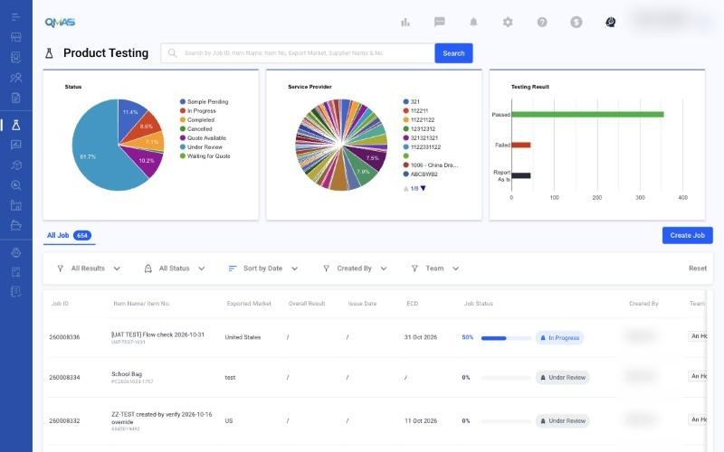
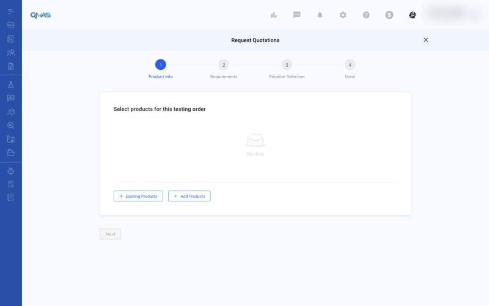
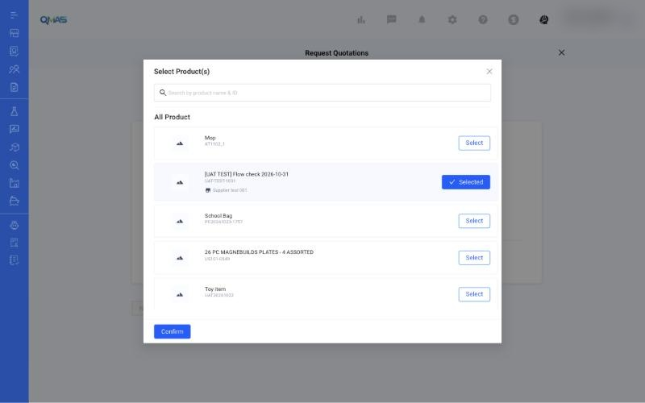
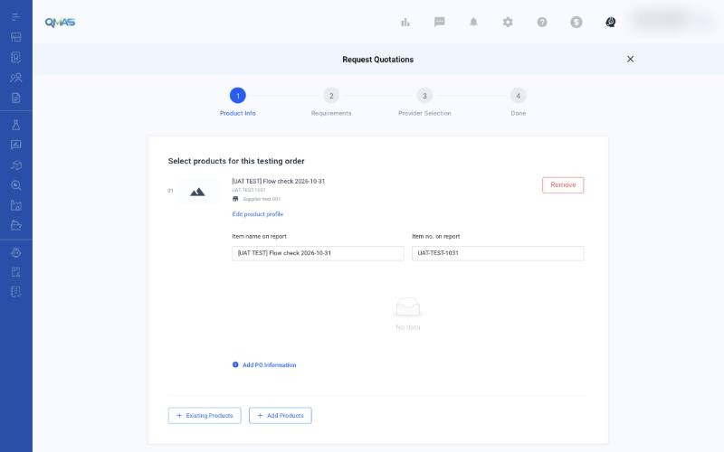
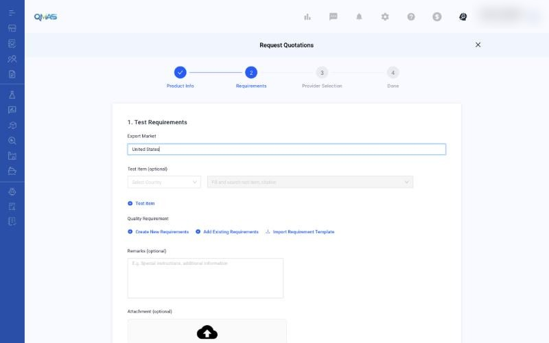
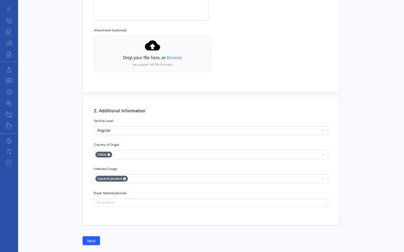
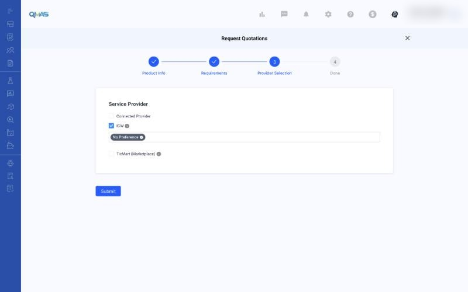

Product Testing — Request a Quotation
Create a product testing job and get a quotation from a laboratory.
Overview
- Open Product Testing and click Create Job.
- Product Info — add an existing product or create a new one.
- Requirements — set the export market, test items, quality requirements and service details.
- Provider Selection — choose Connected Provider, ICW or TicMart, then Submit.
- Done — track the job in the Product Testing list.
Step-by-step
1. Open Product Testing
In the left menu, open Product Testing. The page shows charts of job status, service provider and test results, and the list of all jobs. Click Create Job above the list.

2. Product Info — select products
The Request Quotations wizard opens. Add the products for this testing order:
- + Existing Products picks from your Product Management list.
- + Add Products creates a new product here.

In the Select Product(s) pop-up, search by product name or ID, click Select on each product you need, then click Confirm. You can select more than one product.

Check the product details. You can change Item name on report and Item no. on report, which are printed on the test report. Click Add PO Information to link a purchase order (optional). Then click Next.

3. Requirements
1. Test Requirements
- Export Market — where the product will be sold (required).
- Test Item (optional) — choose a country, then search for test items or citations.
- Quality Requirement — Create New Requirements, Add Existing Requirements, or Import Requirement Template.
- Remarks and Attachment (optional) — special instructions and reference files.

2. Additional Information
- Service Level — Regular, Express or Shuttle / Emergency.
- Country of Origin — where the product is made (you can pick more than one).
- Intended Usage — General product, Adult product, Children product or Toys.
- Buyer Name (optional).
When all required fields are filled, Next turns blue. Click it.

4. Provider Selection
Choose who should quote this job. You can tick more than one:
| Option | Use it when |
|---|---|
| Connected Provider | You already work with a lab that is connected to your QMAS account. |
| ICW | You want ICW to find a lab. Pick a preferred lab, or leave “No Preference”. |
| TicMart (Marketplace) | You want quotations from labs in the TicMart marketplace. |
